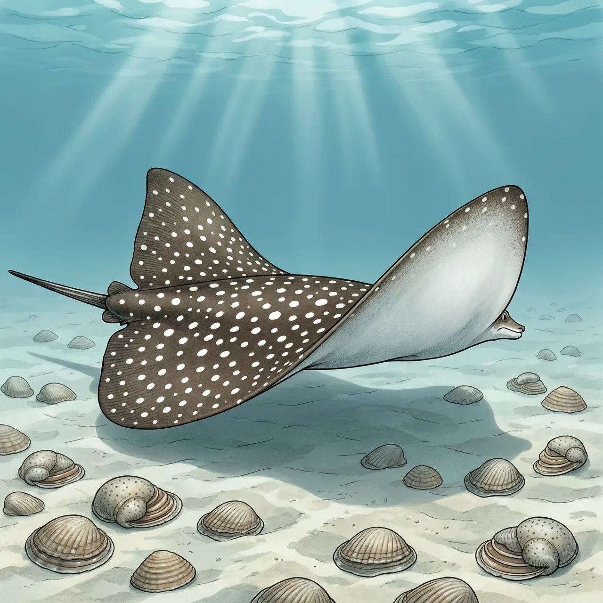
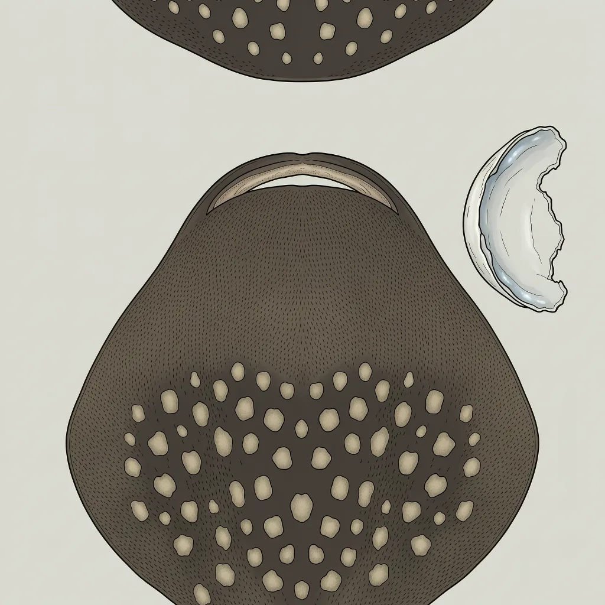

花点无刺鲼是鲼科无刺鲼属的鱼类，背部密布白色斑点。它上下颌的许多细小牙齿愈合成两块平整齿板，靠压碎双壳贝和蟹类取食，生活在东洋界的暖水近岸。取食位置紧贴海底，与底拖网作业区高度重叠，因此被评估为濒危。
两片翼状胸鳍一扇，花点无刺鲼从沙面上方掠过去，背上的白点在浅海透光的水里忽亮忽暗。它属于鲼科无刺鲼属，分布在东洋界的暖水近岸，从印度洋一侧直到西太平洋一侧都有记录。泥沙与贝壳碎屑铺底的水域里，双壳贝和蟹成片生长，水温高，饵料足——花点无刺鲼的食物就长在海底，而这片海底也正是底拖网反复扫过的近岸水域。
花点无刺鲼对付硬壳的武器长在嘴里。多数鲨鱼用一排排分离的尖齿切割猎物，而它的牙齿各自愈合成上下两块平整的齿板，像两扇小磨盘。齿板合拢，把双壳贝或蟹连壳压碎，碎壳被吐出去，软组织被吃掉。这张嘴几乎切不了肉，却把海底那些咬不动的硬壳货变成了稳定的口粮。
把它推向濒危的，并不是有人在专门猎它。花点无刺鲼取食的位置紧贴海底，底拖网的网口同样贴着海底扫过：贝类被翻起来，鲼连同壳一起被卷进网里。它吃得越顺的地方，恰恰是网走得越勤的地方，IUCN 评估因此停在濒危一级。拖网不必瞄准花点无刺鲼，只要把它的食堂一遍遍翻过去，就够了。
